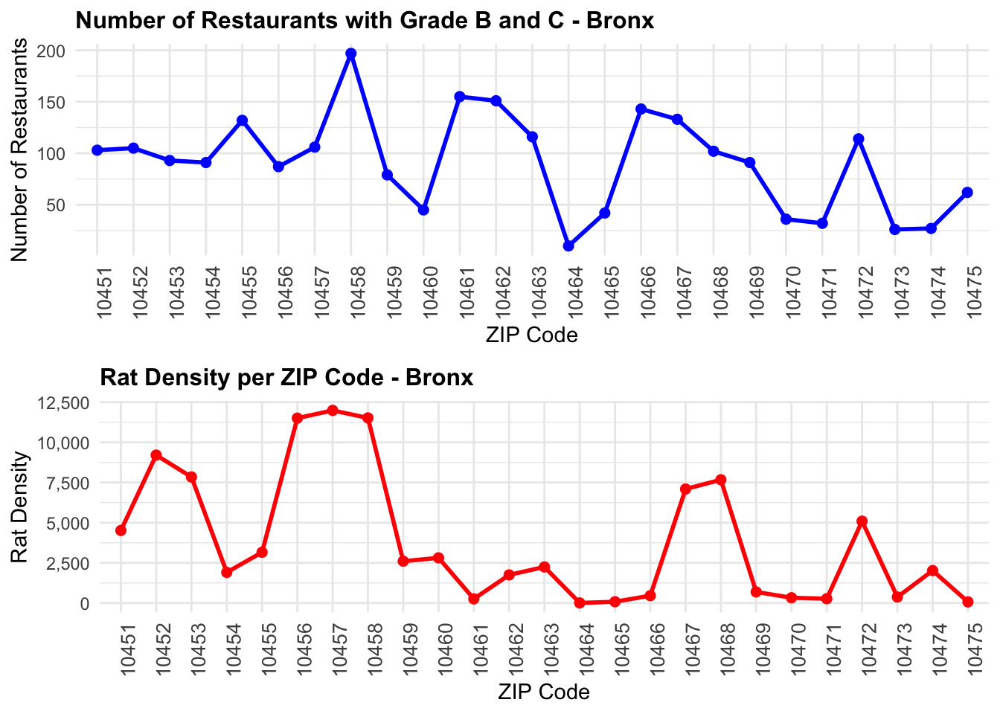
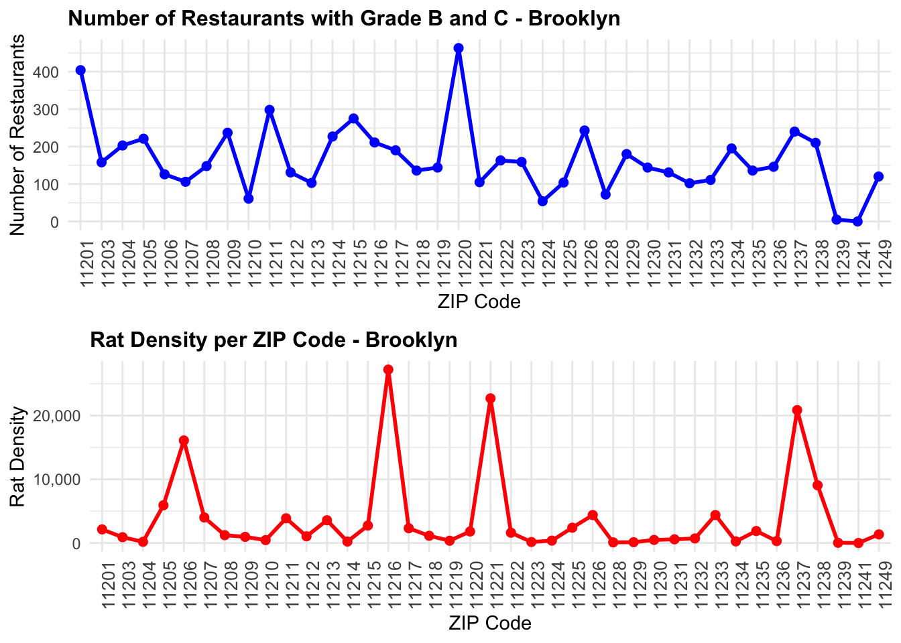
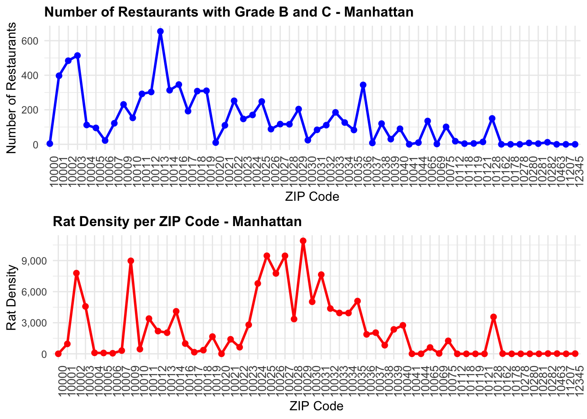
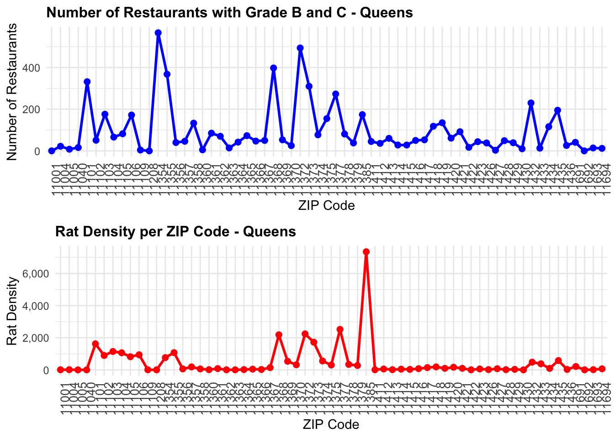
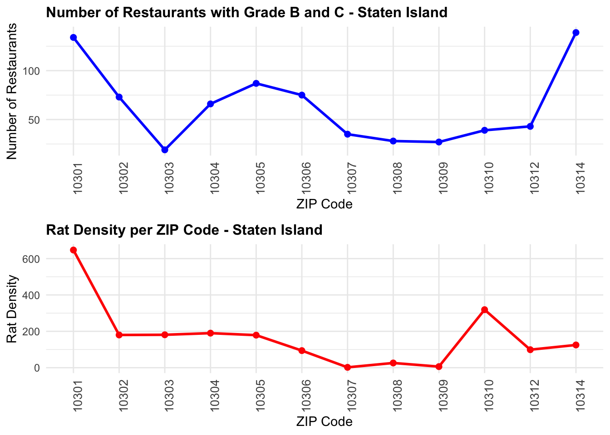
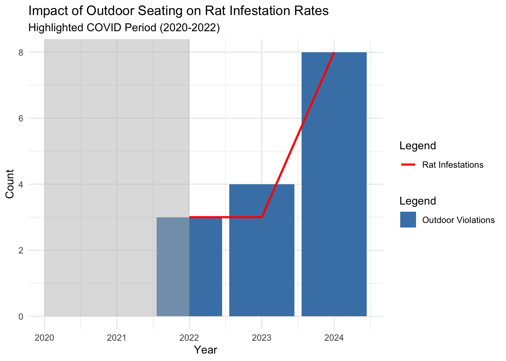
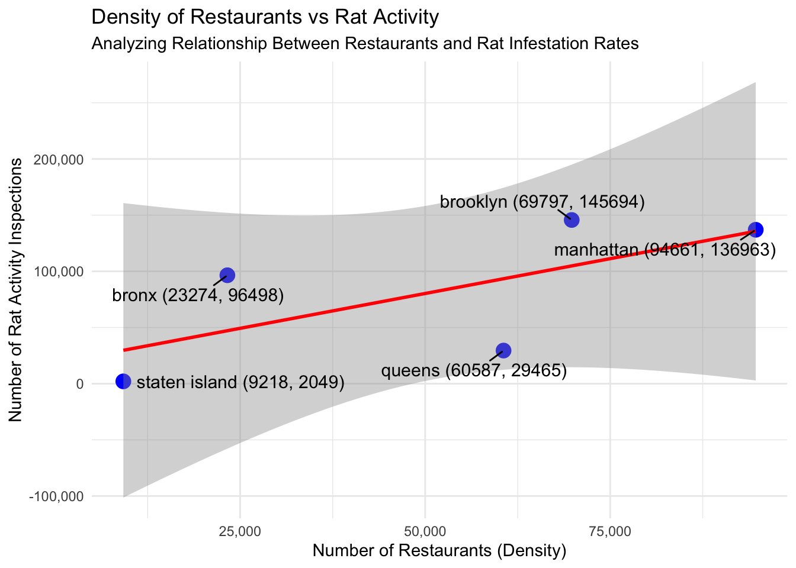

library(tidyverse)
library(sf)
library(leaflet)
library(lubridate)
library(janitor)
library(geosphere)
library(httr)
library(jsonlite)
library(readr)
library(data.table)
library(stringr)
library(scales)
library(gridExtra)
library(dplyr)
library(ggplot2)
library(geosphere)
library(lubridate)
library(tidyr)
library(ggrepel) STA 9750- Final project
Do restaurants play a significant role in contribution to rat infestation?
New York City’s ongoing struggle with rat infestations has raised concerns about various contributing factors, one of which is the role of restaurants. Restaurants, by nature, produce significant amounts of food waste, and when waste management practices are inadequate, they create an ideal environment for rats to thrive. In this research, we aim to analyze whether there is a correlation between waste management violations by restaurants and the frequency of rat infestations. Additionally, we will examine if the density of restaurants in a neighborhood significantly influences the number of reported rat sightings.
The study will also explore how rat infestations have changed pre- and post-COVID-19. During the pandemic, outdoor dining became a widespread adaptation in NYC, and while it supported businesses, it may have inadvertently provided new opportunities for rats through increased food access and improperly managed waste. By analyzing data on restaurant density, waste violations, and rat complaints over time, we will investigate whether outdoor dining has contributed to the rise in rat infestations in specific areas.
Through this analysis, we seek to uncover patterns and relationships that could provide insights into how restaurant practices impact urban rat populations. Identifying these connections is critical for developing targeted interventions to mitigate rat infestations in NYC neighborhoods.
Libraries used
Now, let us load the necessary data set for us to begin our analysis
Loading the data
# Get the current working directory
current_path <- getwd()
# Define the 'data' directory path
data_directory <- file.path(current_path, "Rat_Data")
# Check if the directory exists, and create it if it doesn't
if (!dir.exists(data_directory)) {
success <- dir.create(data_directory, recursive = TRUE)
if (success) {
message("Directory 'Data' created successfully at: ", data_directory)
} else {
stop("Failed to create directory 'Data'. Check permissions or file system.")
}
} else {
message("Directory 'Data' already exists at: ", data_directory)
}Directory 'Data' already exists at: /Users/aachalghimire/GitHub/STA9750-2024-FALL/Rat_DataFetch Rat sightings
# Increase timeout limit to 300 seconds
options(timeout = 300)
# Define output filenames
rats_file <- file.path(data_directory, "Rats_Inspection_Full.csv")
restaurant_file <- file.path(data_directory, "Restaurant_Inspection_Full.csv")
# rats_file <- "Rats_Inspection_Full.csv"
# restaurant_file <- "Restaurant_Inspection_Full.csv"
# Load and filter the Rats data starting from 2019
rats_data <- read_csv(rats_file,show_col_types = FALSE)
rats_filtered_data <- rats_data %>%
filter(as.Date(`INSPECTION_DATE`, format = "%m/%d/%Y") >= as.Date("2019-01-01"))
rats_filtered_file_path <- file.path(data_directory, "Rats_Inspection_2019_onwards.csv")
write.csv(rats_filtered_data, rats_filtered_file_path, row.names = FALSE)
message("Filtered Rats data saved to 'Rats_Inspection_2019_onwards.csv'")Filtered Rats data saved to 'Rats_Inspection_2019_onwards.csv'# Data 2
# Load and filter the Restaurant Inspection data starting from 2019
restaurant_file <- file.path(data_directory, "Restaurant_Inspection_Full.csv")
restaurant_data <- read_csv(restaurant_file,show_col_types = FALSE)
restaurant_filtered_data <- restaurant_data %>%
filter(as.Date(`INSPECTION DATE`, format = "%m/%d/%Y") >= as.Date("2019-01-01"))
restaurant_filtered_file_path <- file.path(data_directory, "Rats_Inspection_2019_onwards.csv")
write.csv(restaurant_filtered_data, restaurant_filtered_file_path, row.names = FALSE)
message("Filtered Restaurant Inspection data saved to 'Restaurant_Inspection_2019_onwards.csv'")Filtered Restaurant Inspection data saved to 'Restaurant_Inspection_2019_onwards.csv'zipcode_mapping <- read_csv("Rat_data/zipcode_borough.csv", show_col_types = FALSE) # Mapping of ZIP codes to Boroughs# Step 1: Clean ZIP Codes and Map Boroughs -----------------------------------
zipcode_mapping <- zipcode_mapping %>%
mutate(ZIPCODE = str_trim(as.character(Zipcode)),
BOROUGH = str_trim(as.character(Borough)))
# Clean and map restaurant data
restaurants_clean <- restaurant_filtered_data %>%
mutate(ZIPCODE = str_trim(as.character(ZIPCODE)),
ZIPCODE = ifelse(str_length(ZIPCODE) == 5, ZIPCODE, NA)) %>% # Ensure valid 5-digit ZIP codes
filter(!is.na(ZIPCODE)) %>%
mutate(BORO = ifelse(is.na(BORO),
zipcode_mapping$BOROUGH[match(ZIPCODE, zipcode_mapping$ZIPCODE)],
BORO))
# Filter for restaurants with Grades B and C
restaurants_bc <- restaurants_clean %>%
filter(GRADE %in% c("B", "C")) %>%
group_by(BORO, ZIPCODE) %>%
summarise(Restaurants_Grade_BC = n(), .groups = "drop")
# Clean and map rat data
rats_clean <- rats_filtered_data %>%
mutate(ZIP_CODE = str_trim(as.character(ZIP_CODE)),
ZIP_CODE = ifelse(str_length(ZIP_CODE) == 5, ZIP_CODE, NA)) %>%
filter(!is.na(ZIP_CODE), !RESULT %in% c("Passed", "Failed for Other R")) %>%
mutate(BOROUGH = ifelse(is.na(BOROUGH),
zipcode_mapping$BOROUGH[match(ZIP_CODE, zipcode_mapping$ZIPCODE)],
BOROUGH)) %>%
group_by(BOROUGH, ZIP_CODE) %>%
summarise(Rat_Density = n(), .groups = "drop")
# Step 2: Combine Data -------------------------------------------------------
combined_data <- full_join(restaurants_bc, rats_clean,
by = c("ZIPCODE" = "ZIP_CODE", "BORO" = "BOROUGH")) %>%
replace_na(list(Restaurants_Grade_BC = 0, Rat_Density = 0))
# Step 3: Generate Plots for Each Borough ------------------------------------
plot_list <- list()
boroughs <- unique(combined_data$BORO)
# Loop through each borough and create plots
for (b in boroughs) {
data_borough <- combined_data %>% filter(BORO == b)
# Plot 1: Number of Restaurants (Grade B and C) by ZIP Code
plot_bc <- ggplot(data_borough, aes(x = ZIPCODE, y = Restaurants_Grade_BC, group = 1)) +
geom_line(color = "blue", size = 1) +
geom_point(color = "blue", size = 2) +
labs(title = paste("Number of Restaurants with Grade B and C -", b),
x = "ZIP Code", y = "Number of Restaurants") +
theme_minimal() +
theme(axis.text.x = element_text(angle = 90, hjust = 1, size = 10),
plot.title = element_text(size = 12, face = "bold")) +
scale_y_continuous(labels = comma)
# Plot 2: Rat Density by ZIP Code
plot_rats <- ggplot(data_borough, aes(x = ZIPCODE, y = Rat_Density, group = 1)) +
geom_line(color = "red", size = 1) +
geom_point(color = "red", size = 2) +
labs(title = paste("Rat Density per ZIP Code -", b),
x = "ZIP Code", y = "Rat Density") +
theme_minimal() +
theme(axis.text.x = element_text(angle = 90, hjust = 1, size = 10),
plot.title = element_text(size = 12, face = "bold")) +
scale_y_continuous(labels = comma)
# Arrange the two plots vertically (one on top of the other)
combined_plot <- grid.arrange(plot_bc, plot_rats, ncol = 1) # Use ncol = 1 for vertical layout
plot_list[[b]] <- combined_plot
}Warning: Using `size` aesthetic for lines was deprecated in ggplot2 3.4.0.
ℹ Please use `linewidth` instead.




Hypothesis and Learnings from the Graphs
Key Observations Across Boroughs:
- Bronx:
- The ZIP codes 10457 and 10458 show higher rat density (above 12,000) while also exhibiting a significant number of restaurants with Grade B and C.
- There seems to be a noticeable link between the increase in rat activity and areas with more restaurants receiving lower grades.
- Brooklyn:
- ZIP codes 11215 and 11222 show the highest rat densities (over 20,000), corresponding to relatively high numbers of restaurants with Grade B and C.
- Rat infestations in Brooklyn appear to cluster in specific ZIP codes, suggesting that localized waste management issues may be contributing to the problem.
- Manhattan:
- ZIP codes 10013 and 10036 have both the highest number of restaurants with Grade B and C (over 600) and noticeable rat activity.
- Despite a significant concentration of lower-graded restaurants, rat densities remain moderate compared to other boroughs, suggesting more effective urban management in some areas.
- Queens:
- ZIP codes 11385 and 11373 show the highest rat densities and a considerable number of restaurants with Grade B and C.
- Rat density appears to peak sharply in specific ZIP codes, correlating with localized concentrations of lower-graded restaurants.
- Staten Island:
- Staten Island has the lowest rat density across all ZIP codes, with a small number of lower-graded restaurants.
- ZIP code 10301 has the highest rat density (600) but relatively fewer restaurants compared to other boroughs.
Hypothesis:
- Boroughs with a higher number of Grade B and C restaurants are more likely to experience elevated rat density, particularly in localized ZIP codes. Poor sanitation practices associated with lower restaurant grades likely contribute to rat infestations.
Learnings:
- Localized Rat Clusters:
- Rat density is not uniformly distributed; specific ZIP codes within boroughs, such as 10457 (Bronx) and 11215 (Brooklyn), experience disproportionately high rat activity.
- Borough-Specific Trends:
- Manhattan: Despite high restaurant density, rat activity remains moderate.
- Brooklyn and Bronx: Exhibit stronger correlations between rat density and restaurants with lower grades.
- Staten Island: Shows consistently lower rat activity, indicating better overall sanitation.
- Targeted Interventions:
- ZIP codes with high numbers of Grade B and C restaurants should be prioritized for sanitation inspections and waste management improvements to reduce rat activity.
Conclusion:
The analysis highlights a positive relationship between the number of restaurants with lower grades (B and C) and rat activity density, especially in high-density boroughs like the Bronx, Brooklyn, and Queens. Effective sanitation practices and targeted interventions in identified ZIP codes are critical to addressing this issue.
# Load required libraries
library(dplyr)
library(ggplot2)
library(geosphere)
library(lubridate)
# Data Preprocessing ---------------------------------------------------------
# Filter rat inspections with valid lat/lon and failed results
rats_filtered_loc <- rats_filtered_data %>%
filter(!is.na(LATITUDE) & !is.na(LONGITUDE) & RESULT != "Passed") %>%
mutate(YEAR = year(mdy_hms(INSPECTION_DATE)))
# Extract outdoor seating violations from restaurants
outdoor_seating <- restaurant_filtered_data %>%
filter(grepl("outdoor|seating|sidewalk", `VIOLATION DESCRIPTION`, ignore.case = TRUE)) %>%
filter(!is.na(Latitude) & !is.na(Longitude)) %>%
mutate(YEAR = year(mdy(`INSPECTION DATE`)))
# Select coordinates for rats and outdoor seating
outdoor_coords <- outdoor_seating %>%
select(Latitude, Longitude) %>%
filter(!is.na(Latitude) & !is.na(Longitude)) %>%
na.omit()
rat_coords <- rats_filtered_loc %>%
select(LATITUDE, LONGITUDE) %>%
filter(!is.na(LATITUDE) & !is.na(LONGITUDE)) %>%
na.omit()
# Function to check for nearby rats (100 meters)
find_rats_nearby <- function(outdoor_coords, rat_coords, distance_threshold = 100) {
# Ensure both inputs are matrices with exactly two columns
rat_coords <- as.matrix(rat_coords[, c(1, 2)])
outdoor_coords <- as.matrix(outdoor_coords[, c(1, 2)])
# Validate column names and types
if (ncol(rat_coords) != 2 | ncol(outdoor_coords) != 2) {
stop("Error: Inputs must have exactly two columns (latitude, longitude).")
}
result <- sapply(1:nrow(outdoor_coords), function(i) {
point <- outdoor_coords[i, ] # Current restaurant coordinates
distances <- distHaversine(matrix(point, nrow = 1), rat_coords) # Distance to all rat points
any(distances <= distance_threshold) # TRUE if within threshold
})
return(result)
}
# Apply the corrected function
outdoor_seating$RAT_INFESTATION_NEARBY <- find_rats_nearby(outdoor_coords, rat_coords)
# Group by year and count rat infestations near outdoor seating violations
rat_summary <- outdoor_seating %>%
filter(RAT_INFESTATION_NEARBY == TRUE) %>%
group_by(YEAR) %>%
summarise(Rat_Infestations = n())
# Summarize total outdoor seating violations by year
outdoor_summary <- outdoor_seating %>%
group_by(YEAR) %>%
summarise(Outdoor_Violations = n())
# Combine the two summaries
combined_summary <- full_join(outdoor_summary, rat_summary, by = "YEAR") %>%
replace_na(list(Outdoor_Violations = 0, Rat_Infestations = 0))
# Visualization --------------------------------------------------------------
ggplot(combined_summary, aes(x = YEAR)) +
geom_bar(aes(y = Outdoor_Violations, fill = "Outdoor Violations"),
stat = "identity", position = "dodge") +
geom_line(aes(y = Rat_Infestations, color = "Rat Infestations"), size = 1) +
scale_fill_manual(values = c("Outdoor Violations" = "steelblue")) +
scale_color_manual(values = c("Rat Infestations" = "red")) +
geom_rect(aes(xmin = 2020, xmax = 2022, ymin = 0, ymax = Inf),
fill = "gray", alpha = 0.2) +
labs(title = "Impact of Outdoor Seating on Rat Infestation Rates",
subtitle = "Highlighted COVID Period (2020-2022)",
x = "Year", y = "Count",
fill = "Legend", color = "Legend") +
theme_minimal()
Key Observations:
- Outdoor Violations:
- There was a clear increase in outdoor seating violations after 2022.
- The violations appear to be highest in 2024, following a gradual rise from 2022 to 2024.
- Rat Infestation Rates:
- Rat infestations near outdoor seating violations also showed a consistent upward trend, increasing sharply in 2023 and 2024.
- The correlation suggests that as outdoor seating violations increase, rat infestations also rise.
- COVID Period (2020-2022):
- The shaded gray area highlights the COVID period (2020-2022), where the counts of outdoor seating violations and rat infestations were relatively lower compared to post-COVID years.
- Post-2022, there is a notable rise in both outdoor violations and rat infestations.
Hypothesis:
- The increase in outdoor seating violations after COVID (2020-2022) may have contributed to higher rat infestation rates. This could be due to improper waste management and sanitation practices around outdoor dining areas.
Learning:
- Post-COVID Recovery: The rise in outdoor dining regulations and activity likely exacerbated rat infestations, emphasizing the importance of effective waste management.
- Preventative Measures: To mitigate rat infestations, stricter enforcement of sanitation protocols for outdoor seating areas is necessary, especially in periods of increased outdoor dining activity.
# Step 1: Prepare ZIP Code Mapping -------------------------------------------
zipcode_mapping <- zipcode_mapping %>%
mutate(ZIPCODE = str_trim(as.character(Zipcode)),
BOROUGH = str_trim(as.character(Borough)))
# Step 2: Fill NA or Invalid BORO in Restaurant Data -------------------------
restaurant_filtered_zb <- restaurant_filtered_data %>%
mutate(ZIPCODE = str_trim(as.character(ZIPCODE)), # Trim and convert ZIPCODE
BORO = ifelse(is.na(BORO) | BORO == "0",
coalesce(zipcode_mapping$BOROUGH[match(ZIPCODE, zipcode_mapping$ZIPCODE)], BORO),
BORO))
# Step 3: Fill NA or Invalid BOROUGH in Rat Data -----------------------------
rats_filtered_zb <- rats_filtered_data %>%
mutate(ZIP_CODE = str_trim(as.character(ZIP_CODE)), # Trim and convert ZIP_CODE
BOROUGH = coalesce(zipcode_mapping$BOROUGH[match(ZIP_CODE, zipcode_mapping$ZIPCODE)], BOROUGH))
# Step 2: Filter Rat Data for Rat Activity -----------------------------------
rat_activity <- rats_filtered_zb %>%
filter(!RESULT %in% c("Passed", "Failed for Other R")) %>%
filter(!is.na(LATITUDE) & !is.na(LONGITUDE)) %>%
group_by(BOROUGH) %>%
summarise(Rat_Activity_Count = n())
# Step 3: Aggregate Restaurant Data by Borough ------------------------------
restaurant_density <- restaurant_filtered_zb %>%
filter(!is.na(Latitude) & !is.na(Longitude)) %>%
group_by(BORO) %>%
summarise(Restaurant_Count = n())
# Step 4: Merge Data ---------------------------------------------------------
density_data <- restaurant_density %>%
mutate(BORO = str_to_lower(str_trim(BORO))) %>%
inner_join(
rat_activity %>%
mutate(BOROUGH = str_to_lower(str_trim(BOROUGH))),
by = c("BORO" = "BOROUGH")
)
# Step 5: Visualization ------------------------------------------------------
ggplot(density_data, aes(x = Restaurant_Count, y = Rat_Activity_Count, label = BORO)) +
geom_point(size = 4, color = "blue") + # Scatter points
geom_smooth(method = "lm", color = "red", se = TRUE) + # Trendline with confidence interval
geom_text_repel(aes(label = paste0(BORO, " (", Restaurant_Count, ", ", Rat_Activity_Count, ")")),
size = 4, color = "black", box.padding = 0.5) + # Add BORO and coordinates
scale_y_continuous(labels = comma) + # Format y-axis as whole numbers
scale_x_continuous(labels = comma) + # Format x-axis as whole numbers
labs(title = "Density of Restaurants vs Rat Activity",
subtitle = "Analyzing Relationship Between Restaurants and Rat Infestation Rates",
x = "Number of Restaurants (Density)",
y = "Number of Rat Activity Inspections") +
theme_minimal()
Key Observations:
- Positive Correlation:
- The graph shows a slight positive correlation between the number of restaurants (restaurant density) and the number of rat activity inspections.
- Boroughs with higher restaurant density, such as Manhattan and Brooklyn, also exhibit higher rat activity inspections.
- Manhattan and Brooklyn:
- These boroughs have the highest restaurant densities (e.g., Manhattan: ~94,661 restaurants) and significant rat activity counts (e.g., 136,963 inspections).
- This suggests that areas with concentrated restaurant activity may experience increased rat infestations due to factors such as waste generation.
- Low-Density Areas:
- Staten Island has the lowest restaurant density (~9,218 restaurants) and rat activity inspections (~2,049). This aligns with the general trend that lower restaurant density areas tend to have lower rat activity.
- Outliers:
- The Bronx appears to have a higher number of rat activity inspections relative to its restaurant density (~23,274 restaurants, ~96,498 inspections). This could indicate other contributing factors, such as waste management issues or urban infrastructure challenges.
Hypothesis:
- Higher restaurant density contributes to increased rat activity due to improper waste management, food availability, and urban environmental factors.
Learning:
- Targeted Waste Management Policies: Boroughs with higher restaurant density, like Manhattan and Brooklyn, require stricter waste management practices to mitigate rat infestations.
- Further Investigation: The Bronx’s higher rat activity relative to restaurant density warrants further analysis into non-restaurant-related factors contributing to infestations.